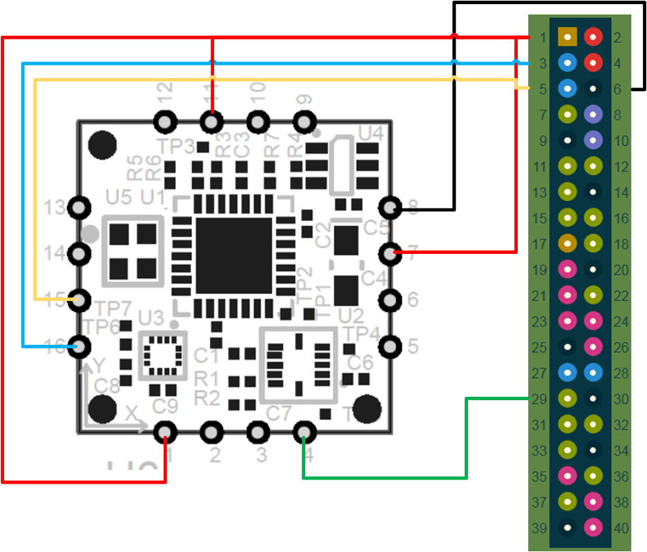

Introduction
If you are on this page, it is because you are interested in using an incredibly cheap 9-axis IMU which offers sensor fusion. The MM7150 was released in 2015 and is available for less than $30. This IMU includes a gyroscope, a magnetometer and an accelerometer. Thanks to the sensor fusion, we are expecting a low error in drift and, additionally to the measures from the sensors, the rotation is expected to be calculated. Unfortunately, the IMU is not plug-n-play, and that is why I wrote this guide. In this guide, I am using a Raspberry Pi v.3 as computer. But I am expecting you to be able to connect the IMU to any other boards which runs Linux (kernel 4.4+) equipped with GPIOs and an I2C port.
MM7150 schematic
The schematic of MM7150 is shown below. The pins of interest are colored in red. The next section shows the physical connection between the IMU and the Raspberry Pi.
Connection to Raspberry Pi

Limitations
The wake-up line (see datasheet) is connected but it is, unfortunately, not used (see next post to know why). You will not be able to use the power management.
Control the MM7150 with linux (Raspbian)
The next step is to configure the linux kernel in order to enable the MM7150 in your system (go to this page).